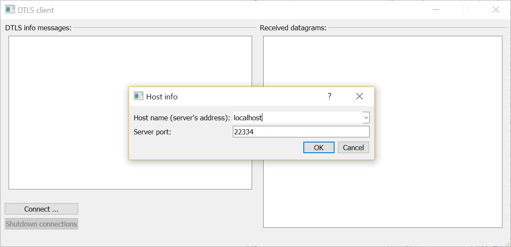

DTLS client
This example demonstrates how to implement client-side DTLS connections.

Note: The DTLS client example is intended to be run alongside the DTLS server example.
The example DTLS client can establish several DTLS connections to one or many DTLS servers. A client-side DTLS connection is implemented by the DtlsAssociation class. This class uses QUdpSocket to read and write datagrams and QDtls for encryption:
class DtlsAssociation : public QObject { Q_OBJECT public: DtlsAssociation(const QHostAddress &address, quint16 port, const QString &connectionName); ~DtlsAssociation(); void startHandshake(); signals: void errorMessage(const QString &message); void warningMessage(const QString &message); void infoMessage(const QString &message); void serverResponse(const QString &clientInfo, const QByteArray &datagraam, const QByteArray &plainText); private slots: void udpSocketConnected(); void readyRead(); void handshakeTimeout(); void pskRequired(QSslPreSharedKeyAuthenticator *auth); void pingTimeout(); private: QString name; QUdpSocket socket; QDtls crypto; QTimer pingTimer; unsigned ping = 0; Q_DISABLE_COPY(DtlsAssociation) };
The constructor sets the minimal TLS configuration for the new DTLS connection, and sets the address and the port of the server:
...
auto configuration = QSslConfiguration::defaultDtlsConfiguration();
configuration.setPeerVerifyMode(QSslSocket::VerifyNone);
crypto.setPeer(address, port);
crypto.setDtlsConfiguration(configuration);
...
The QDtls::handshakeTimeout() signal is connected to the handleTimeout() slot to deal with packet loss and retransmission during the handshake phase:
...
connect(&crypto, &QDtls::handshakeTimeout, this, &DtlsAssociation::handshakeTimeout);
...
To ensure we receive only the datagrams from the server, we connect our UDP socket to the server:
...
socket.connectToHost(address.toString(), port);
...
The QUdpSocket::readyRead() signal is connected to the readyRead() slot:
...
connect(&socket, &QUdpSocket::readyRead, this, &DtlsAssociation::readyRead);
...
When a secure connection to a server is established, a DtlsAssociation object will be sending short ping messages to the server, using a timer:
pingTimer.setInterval(5000); connect(&pingTimer, &QTimer::timeout, this, &DtlsAssociation::pingTimeout);
startHandshake() starts a handshake with the server:
void DtlsAssociation::startHandshake() { if (socket.state() != QAbstractSocket::ConnectedState) { emit infoMessage(tr("%1: connecting UDP socket first ...").arg(name)); connect(&socket, &QAbstractSocket::connected, this, &DtlsAssociation::udpSocketConnected); return; } if (!crypto.doHandshake(&socket)) emit errorMessage(tr("%1: failed to start a handshake - %2").arg(name, crypto.dtlsErrorString())); else emit infoMessage(tr("%1: starting a handshake").arg(name)); }
The readyRead() slot reads a datagram sent by the server:
QByteArray dgram(socket.pendingDatagramSize(), Qt::Uninitialized); const qint64 bytesRead = socket.readDatagram(dgram.data(), dgram.size()); if (bytesRead <= 0) { emit warningMessage(tr("%1: spurious read notification?").arg(name)); return; } dgram.resize(bytesRead);
If the handshake was already completed, this datagram is decrypted:
if (crypto.isConnectionEncrypted()) { const QByteArray plainText = crypto.decryptDatagram(&socket, dgram); if (plainText.size()) { emit serverResponse(name, dgram, plainText); return; } if (crypto.dtlsError() == QDtlsError::RemoteClosedConnectionError) { emit errorMessage(tr("%1: shutdown alert received").arg(name)); socket.close(); pingTimer.stop(); return; } emit warningMessage(tr("%1: zero-length datagram received?").arg(name)); } else {
otherwise, we try to continue the handshake:
if (!crypto.doHandshake(&socket, dgram)) {
emit errorMessage(tr("%1: handshake error - %2").arg(name, crypto.dtlsErrorString()));
return;
}
When the handshake has completed, we send our first ping message:
if (crypto.isConnectionEncrypted()) {
emit infoMessage(tr("%1: encrypted connection established!").arg(name));
pingTimer.start();
pingTimeout();
} else {
The pskRequired() slot provides the Pre-Shared Key (PSK) needed during the handshake phase:
void DtlsAssociation::pskRequired(QSslPreSharedKeyAuthenticator *auth) { Q_ASSERT(auth); emit infoMessage(tr("%1: providing pre-shared key ...").arg(name)); auth->setIdentity(name.toLatin1()); auth->setPreSharedKey(QByteArrayLiteral("\x1a\x2b\x3c\x4d\x5e\x6f")); }
Note: For the sake of brevity, the definition of pskRequired() is oversimplified. The documentation for the QSslPreSharedKeyAuthenticator class explains in detail how this slot can be properly implemented.
pingTimeout() sends an encrypted message to the server:
void DtlsAssociation::pingTimeout() { static const QString message = QStringLiteral("I am %1, please, accept our ping %2"); const qint64 written = crypto.writeDatagramEncrypted(&socket, message.arg(name).arg(ping).toLatin1()); if (written <= 0) { emit errorMessage(tr("%1: failed to send a ping - %2").arg(name, crypto.dtlsErrorString())); pingTimer.stop(); return; } ++ping; }
During the handshake phase the client must handle possible timeouts, which can happen due to packet loss. The handshakeTimeout() slot retransmits the handshake messages:
void DtlsAssociation::handshakeTimeout() { emit warningMessage(tr("%1: handshake timeout, trying to re-transmit").arg(name)); if (!crypto.handleTimeout(&socket)) emit errorMessage(tr("%1: failed to re-transmit - %2").arg(name, crypto.dtlsErrorString())); }
Before a client connection is destroyed, its DTLS connection must be shut down:
DtlsAssociation::~DtlsAssociation() { if (crypto.isConnectionEncrypted()) crypto.shutdown(&socket); }
Error messages, informational messages, and decrypted responses from servers are displayed by the UI:
const QString colorizer(QStringLiteral("<font color=\"%1\">%2</font><br>")); void MainWindow::addErrorMessage(const QString &message) { ui->clientMessages->insertHtml(colorizer.arg(QStringLiteral("Crimson"), message)); } void MainWindow::addWarningMessage(const QString &message) { ui->clientMessages->insertHtml(colorizer.arg(QStringLiteral("DarkOrange"), message)); } void MainWindow::addInfoMessage(const QString &message) { ui->clientMessages->insertHtml(colorizer.arg(QStringLiteral("DarkBlue"), message)); } void MainWindow::addServerResponse(const QString &clientInfo, const QByteArray &datagram, const QByteArray &plainText) { static const QString messageColor = QStringLiteral("DarkMagenta"); static const QString formatter = QStringLiteral("<br>---------------" "<br>%1 received a DTLS datagram:<br> %2" "<br>As plain text:<br> %3"); const QString html = formatter.arg(clientInfo, QString::fromUtf8(datagram.toHex(' ')), QString::fromUtf8(plainText)); ui->serverMessages->insertHtml(colorizer.arg(messageColor, html)); }